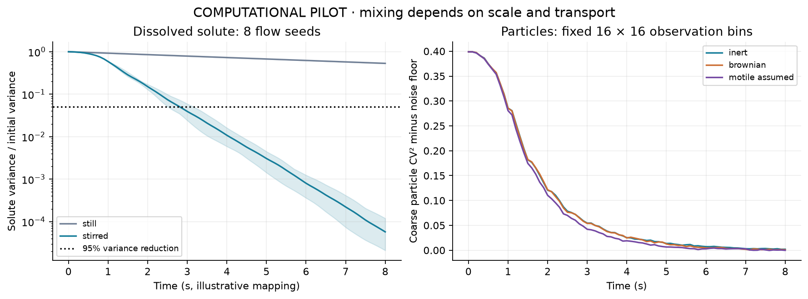
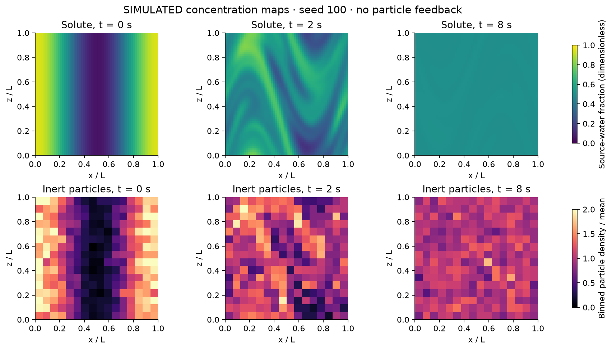
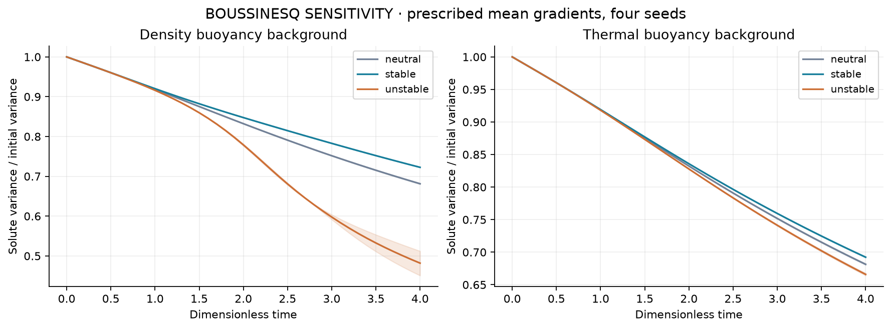
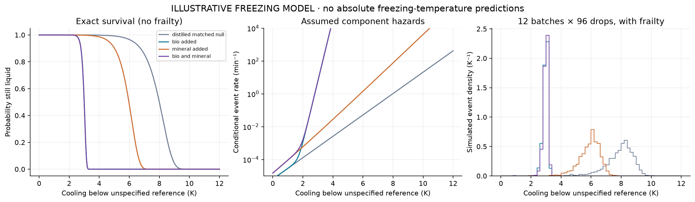
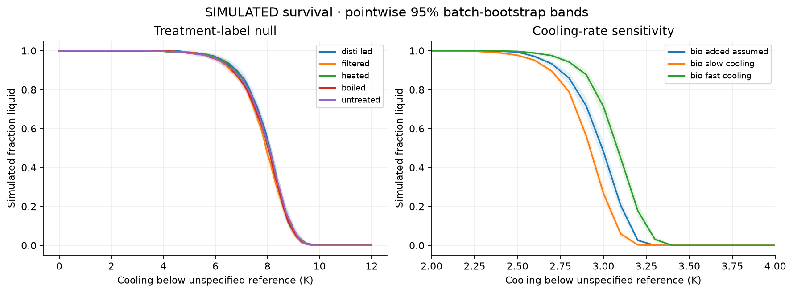

NousVolition · companion research study · 9 October 2026
Two waters mix.
Particles have their own transport.
Bacteria-bearing water and ordinary water are miscible. Flow and diffusion mix the liquid. Suspended cells may spread more slowly, collect at surfaces, settle, or swim. Some biological material can change ice nucleation even when it is no longer living.
Evidence boundary: This is a completed computational pilot with published scientific context. No new laboratory measurements, culturing, deterministic freezing-temperature claims, or new physical law.
2.6–3.2 sto 95% solute variance reduction
Eight simulated stirring patterns; illustrative 1 mm domain.
2,329×difference in diffusivity
Chosen dissolved solute versus an ideal passive 1 μm sphere.
16,128synthetic freezing events
Fourteen arms; twelve independent simulated batches per arm.
Full study and reproducibility instructions · Test matrix · Published evidence · Exact results
1 · Mixing is different from particle homogenization
The stirred solute lost 99.9943% of its initial variance by eight seconds; diffusion alone lost 46.83%. Inert particles approached a uniform distribution in coarse bins, but fine-scale uniformity was not established. Neither behavior implies intention or biological repulsion.

Left shading spans the eight flow seeds, not a confidence interval. Particle observations use fixed 16 × 16 bins and a finite-count noise correction.

Simulated fields, seed 100. The two rows have different transport and observation scales; dye appearance cannot establish microbial uniformity.
A separate Stokes-settling calculation predicts 0.02725 μm/s for a 1 μm sphere with an assumed 50 kg/m³ excess density. In a still, 1 mm deep column, about 9.81% of uniformly placed particles reach the bottom in one hour. Larger particles settle faster. Actual attachment, aggregates and buoyancy depend on material properties.

Dimensionless Boussinesq comparison, independent of the millimetre-scale mapping above. Stable layering can inhibit mixing. Density and thermal diffusivities differ.
| Background | Final solute variance | Seed-bootstrap 95% interval |
|---|
| density 0 | 0.06898 | 0.06888–0.06908 |
| density 4 | 0.07316 | 0.07316–0.07317 |
| density -4 | 0.04880 | 0.04595–0.05165 |
| thermal 0 | 0.06898 | 0.06888–0.06908 |
| thermal 4 | 0.07009 | 0.07003–0.07015 |
| thermal -4 | 0.06742 | 0.06725–0.06759 |
2 · Small biological components can matter through specific mechanisms
In the passive dilute-sphere estimate, 10⁶ particles/mL increases viscosity by only 1.31 parts per million. Living systems can behave differently through motility, active stresses, metabolism, biofilms or surfactants. Those effects need measured parameters; they were not fabricated as extra forces here.
The completed stress comparison covers passive viscosity, sampled shear exposure, and algebraic sensitivities to viscosity, surface tension, heat capacity and evaporation coefficient. Coupled biological feedback, droplet breakup, chemistry and real evaporation remain planned extensions. Published experiments provide evidence that active suspensions can modify mixing under particular conditions: Ran et al. (2021).
3 · Freezing is a distribution, with competing explanations
The calculation follows a time-dependent nucleation hazard and survival probability. Biological, mineral and surface contributions are separate assumed terms. Treatment labels share the same physics under the null; none is assigned a fictional measured freezing point.

All locations on this relative-temperature axis are assumptions. The biological slope is informed by a published local measurement; these curves do not calibrate real water samples.

Pointwise 95% bands resample independent simulated batches. They exclude uncertainty in the assumed rate parameters.
Published work shows ice activity from nonviable bacterial material: Wex et al. (2015). A published class-A rate slope gives an approximate 0.080 K colder median when cooling is doubled, conditional on the constant-slope model: Budke & Koop (2015). Neither result means all bacteria nucleate ice or that nucleation indicates pathogenicity.
Distillation, filtration, heating and boiling also change ions, gases, particles, proteins and surfaces. Real attribution requires matched sample volume, actual temperature history, container, humidity/airflow and particle/solute composition, plus blanks, sham treatments, inert particles, mineral controls and safe nonviable reference material. Filtering and killing do not necessarily eliminate extracellular nucleators.
What was verified—and what remains uncertain
Analytic transport, mass budgets, particle diffusion and settling, incompressibility, stable-energy decay, and probability calculations pass their automated tests. Scalar time refinement shows second-order convergence; the finest checked scalar grid difference is 1.58 × 10⁻⁹ RMS. The unstable-density coarse grid failed and was replaced by a refined primary calculation. Its failure remains in the raw numerical record.
The largest checked stratification primary low-mode error is 0.000104; the largest divergence residual is 4.72e-16. These finite checks validate the stated numerical pilot, not all physical water conditions. Optional imposed swimming omits real rod alignment and flow-induced orientation. No aggregation kinetics or new empirical survival curves were measured.
Navier–Stokes supplies momentum evolution. Solute transport, particle microphysics, interfaces, heat and nucleation need additional equations and evidence. This study makes no claim about the Clay existence and smoothness problem.